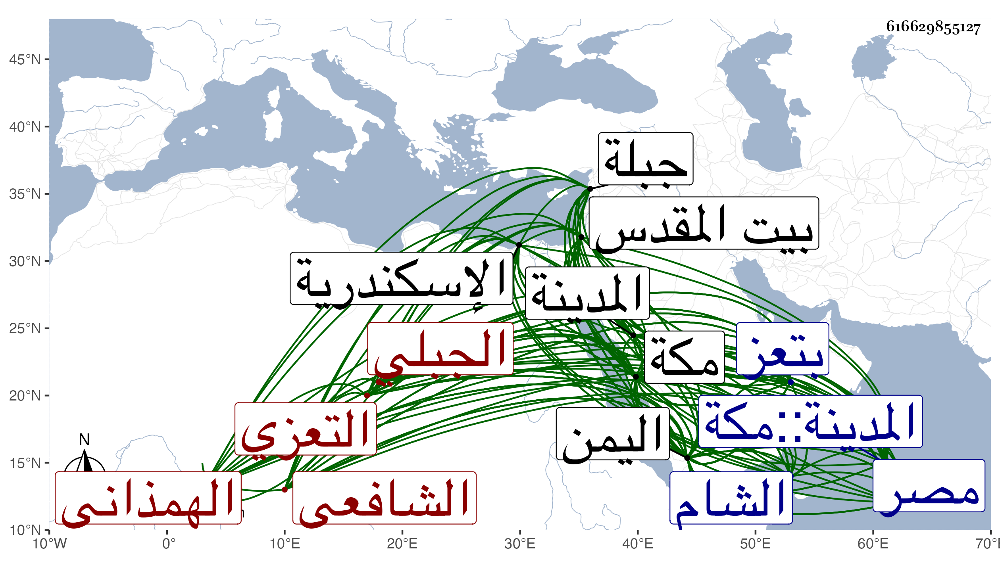

0902Sakhawi.DawLamic.ITO20230111-ara1.EIS1600.616629855127
Biography ID: 616629855127
456
محمد بن أبي بكر بن محمد بن صالح بن محمد الجمال أبو عبد الله بن الرضي الهمذاني الجبلي بكسر الجيم ثم موحدة ساكنة التعزي الشافعي ويعرف بابن الخياط . ولد بجبلة من بلاد اليمن في سنة سبع وثمانين وسبعمائة ونشأ بها على عفة ونزاهة فتفقه بأبيه وغيره حتى مهر وحصل فنونا من العلم وأجيز بالإفتاء والتدريس واعتنى بهذا الشأن ولازم النفيس العلوي فيه فلم يمض إلا اليسير وفاقه بحيث كان لا يجاريه في شيء ، وتخرج بالتقي الفاسي وأخذ عن المجد اللغوي واغتبط به حتى كان يكاتبه بقوله إلى الليث بن الليث والماء ابن الغيث ، وكذا أخذ عن ابن الجزري لما ورد عليهم اليمن في سنة ثمان وعشرين قرأ عليه صحيح مسلم وغيره ، وحج مرتين وزار النبي صلى الله عليه وسلم وقرأ بمكة على الزين أبي بكر المراغي والجمال بن ظهيرة وابن سلامة ، وآخرين وأجاز له جماعة من الحرمين وبيت المقدس واسكندرية ومصر والشام وغيرها باستدعاء ابن موسى وكان قد صحبه وانتفع به سيما بعد موته فان غالب كتبه زأجزائه صارت إليه وحدث سمع منه الفضلاء . وممن أخذ عنه التقي بن فهد وابناه ، وكان من الفقهاء المعتبرين بالقطر اليماني المنفردين بالحفظ فيه بالاجماع والمرجوع إليهم فيه عند النزاع مع وجاهة واتصال بالناصر أحمد صاحب اليمن . مات بالطاعون في ليلة الجمعة سابع ذي القعدة سنة تسع وثلاثين بتعز ، ذكره ابن فهد وشيخنا في إنبائه لكن باختصار وقال أنه درس بتعز وأفتى وانتهت إليه رياسة العلم بالحديث هناك ، وكذا ترجمه شيخه النفيس العلوي في حياته بحافظ الوقت وان والده كان مسرورا به ، ولما سافر لمكة رأى في المنام سراجا خرج من منزله ثم رجع إليه فحمد الله لكونه كان السراج وأنه حصل في مكة والمدينة علوما جمة وكتبا مفيدة وأخذ مشايخ الحرمين وهو على الإفادة والإستفادة وقال غيره : الإمام المحقق المدقق الحافظ انتهت إليه رياسة الحديث في اليمن وكذلك رياسة الفتوى بتعز بعد موت قاسم الدمني المتوفي في سنة اثنتين وثلاثين ، ولما وصل ابن الجزري عرف له فضله وقدمه على غيره ، وهو في عقود المقريزي ووصفه بالمحدث المفيد الضابط وأنه تفقه بالجمال العوادي واستولى على فوائد شيخه الجمال بن موسى المراكشي وهي جمة كثيرة النفع فاستعان بها على ما هو بصدده واشتهر لذلك بالمعرفة التامة .
